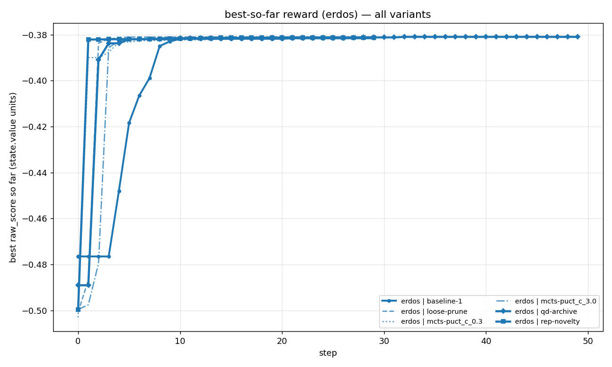
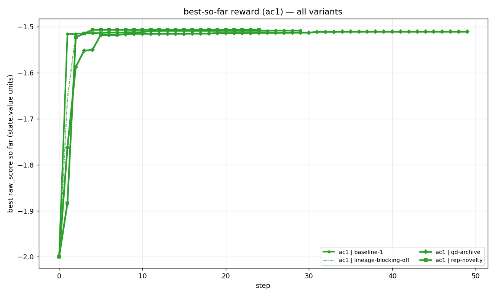
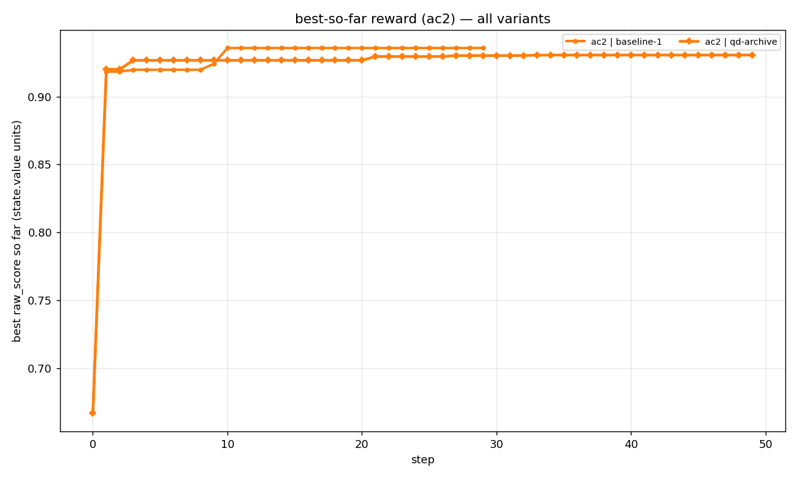

Summary OVERVIEW
Cross-task leaderboards
Full 6-digit results on all 3 tasks, across every variant tested.
ERDOS — minimize C₅ overlap (frontier 0.380876)
| Variant | Epochs · rollouts/step | C₅ bound | Gap |
|---|---|---|---|
| phaseA baseline seed=0 (preliminary) | 50 ep · 512 | 0.380965 | +0.000089 |
| qd-archive | 50 ep · 64 | 0.380966 | +0.000090 |
| mcts-puct_c=3.0 | 30 ep · 64 | 0.380983 | +0.000107 |
| loose-prune | 30 ep · 64 | 0.381044 | +0.000168 |
| rep-novelty | 30 ep · 64 | 0.381272 | +0.000396 |
| mcts-puct_c=0.3 | 30 ep · 64 | 0.381355 | +0.000479 |
| baseline | 30 ep · 64 | 0.381584 | +0.000708 |

AC1 — minimize sup‖autocorrelation‖ (frontier 1.503)
| Variant | Epochs · rollouts/step | Best |
|---|---|---|
| rep-novelty | 24/30 (timeout) · 64 | 1.506845 |
| ac1-loose-prune-50 | 50 · 64 | 1.507113 |
| ac1-baseline-50 (partial) | step 22/50 · 64 | 1.507085 |
| lineage-blocking-off | 30 · 64 | 1.507528 |
| baseline-1 | 30 · 64 | 1.508628 |
| qd-archive | 50 · 64 | 1.510981 |
| ac1-mcts-c=3.0-50 | 50 · 64 | 1.515995 |

AC2 — maximize lower bound (frontier 0.97)
| Variant | Epochs · rollouts/step | Best |
|---|---|---|
| baseline-1 | 30 · 64 | 0.935814 |
| qd-archive | 50 · 64 | 0.930612 |

Headline take
No method broke the published 0.380876 frontier on erdos. Closest was qd-archive at 0.380966 (+0.000090). The Phase A baseline at full batch is at 0.380965 — essentially the same, with no method enabled.
The interpretation hinges on the noise floor. Until Phase A's 5 erdos seeds finish and we have a std on the seed-to-seed variance, "qd beat mcts by 0.000017" or "phaseA baseline beat qd by 0.000001" are both inside the plausible noise.